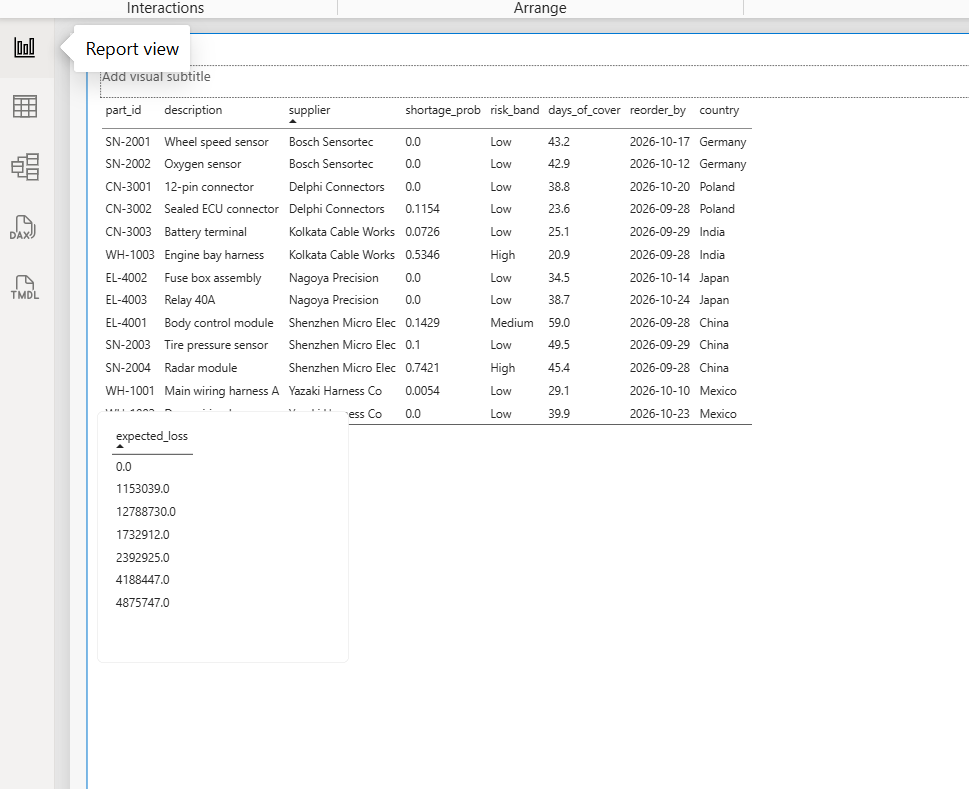
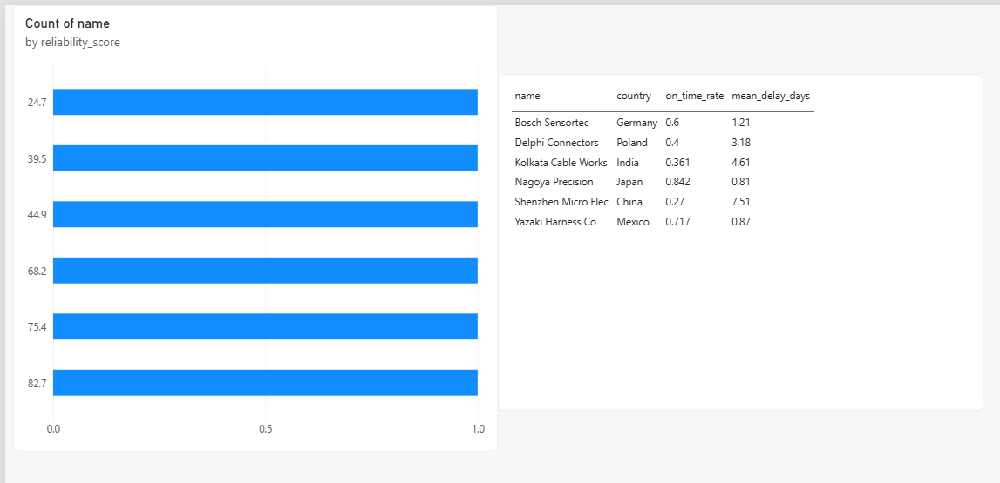
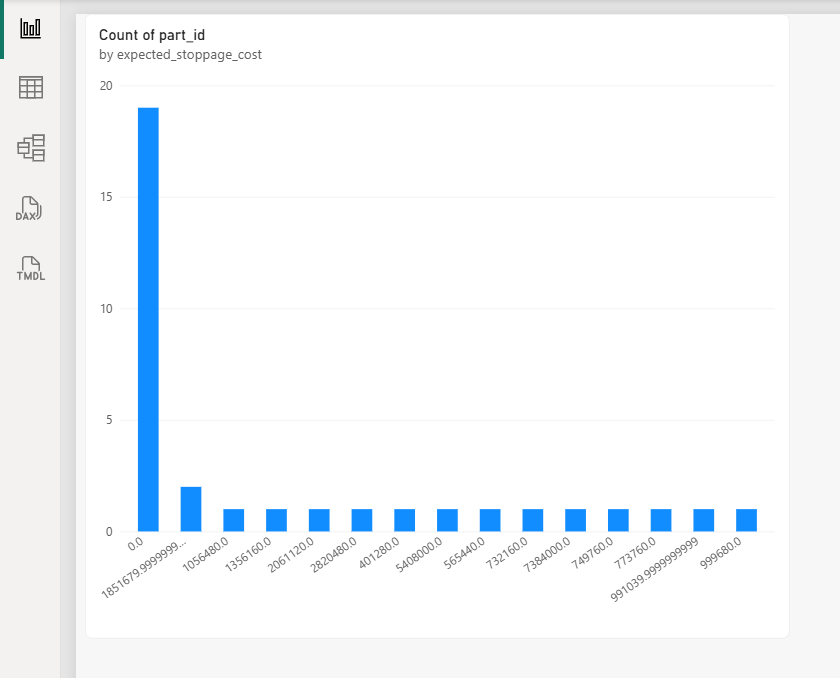

Supply Chain Bottleneck Predictor
Predicts automotive parts shortages before production halts, using BOM explosion, supplier lead-time variance, and shortage probability. All data on this page is synthetic.
Parts at risk
Supplier reliability
Expected stoppage cost by vehicle line
Power BI dashboard
Screenshots of the full Power BI report. Interactive filters and drill-downs are available in the .pbix file on GitHub.

Parts at Risk — sortable table with colour-coded risk band, plus high-risk count and total expected loss cards.

Supplier Reliability — reliability score and on-time / delay stats per supplier.

Financial Impact — expected stoppage cost by vehicle line and contributing part.
Try the API
This mimics /api/part-risk?part_id=XYZ. Try SN-2004, WH-1003, EL-4001 or WH-1002.